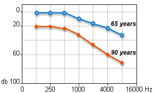
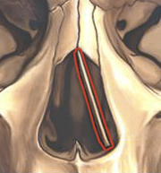

Θέματα Ενηλίκων
Στις παρακάτω παραγράφους θα αναπτυχθούν θέματα που αφορούν κυρίως ενήλικες.
Βούλωσε το αυτί μου στο αεροπλάνο (βαρότραυμα)
Βαρότραυμα είναι ο ιατρικός όρος, που περιγράφει την κατάσταση του βουλώματος του αυτιού κατά τη διάρκεια ή και μετά από πτήση με αεροπλάνο. Στην περίπτωση αυτή δημιουργείται βλάβη στο μέσο ή και στο εσωτερικό αυτί (πίσω από το τύμπανο). Χαρακτηριστικό είναι το αίσθημα ότι το αυτί έχει βουλώσει. Επίσης, μπορεί να συνυπάρχει ελάττωση της ακοής και βουητά στα αυτιά. Σε σπάνιες περιπτώσεις παρατηρείται και ζάλη ή ίλιγγος, ενώ πολλές φορές υπάρχει και αιμορραγία πίσω από το τύμπανο, που φαίνεται μόνο με την ειδική εξέταση (ωτοσκόπηση). Συμπερασματικά, αν κατά τη διάρκεια της πτήσης ή μετά την προσγείωση υπάρχει βούλωμα στα αυτιά, πόνος, βουητά ή ζάλη πρέπει επειγόντως να εξετασθείτε από ωτορινολαρυγγολόγο.
Πονάει το αυτί από τη θάλασσα (εξωτερική ωτίτιδα, ωτίτιδα του κολυμβητή)
Εαν πονάει το ένα ή και τα δύο αυτιά μετά το μπάνιο στη θάλασσα ή την πισίνα, τότε πιθανώς να έχει αναπτυχθεί εξωτερική ωτίτιδα. Η μόλυνση της εισόδου του αυτιού προκαλεί δυνατό πόνο, ο οποίος μπορεί να χειροτερέψει σε βαθμό, που να μη μπορεί κανείς να ακουμπήσει το αυτί ή να μη μπορεί να ανοιγοκλείσει το στόμα. Ο πόνος μπορεί να επεκταθεί στο κεφάλι ή ακόμα και στον τράχηλο.
Στα πλαίσια της ωτίτιδας αρχίζει να τρέχει από το αυτί πυώδες υγρό, το οποίο αρκετές φορές είναι δύσοσμο. Η εξωτερική ωτίτιδα θα πρέπει να αντιμετωπίζεται το συντομότερο απο τον ωτορινολαρυγγολόγο, γιατί αν παραμεληθεί μπορεί να οδηγήσει σε επέκταση της φλεγμονής στο πρόσωπο, διόγκωση των λεμφαδένων στον τράχηλο και πίσω από το αυτί και επώδυνη απόφραξη της εισόδου του αυτιού με βαρηκοϊα. Ο ωτορινολαρυγγολόγος θα καθαρίσει το αυτί από το πύον και θα δώσει την κατάλληλη φαρμακευτική αγωγή. Σε ορισμένες περιπτώσεις τοποθετούμε και ειδικό γαζάκι για να κρατήσουμε το αυτί ανοιχτό.
Τρύπα στο τύμπανο (διάτρηση τυμπάνου)

Γενικά, η διάτρηση του τυμπάνου οφείλεται σε δύο μεγάλες κατηγορίες. Τα τραύματα και τις φλεγμονές. Παράδειγμα τραυματικής ρήξης του τυμπάνου είναι το χαστούκι στο αυτί. Παράδειγμα φλεγμονώδους διάτρησης είναι η οξεία μέση ωτίτιδα και η χρόνια μέση ωτίτιδα. Στην οξεία μέση ωτίτιδα το πύο δημιουργεί τρύπα στο τύμπανο και τρέχει προς τα έξω. Όταν συμβεί αυτό, τότε συνήθως υπάρχει ανακούφιση του πόνου της ωτίτιδας. Στη χρόνια μέση ωτίτιδα η διάτρηση παραμένει για μεγάλο χρονικό διάστημα και πολλές φορές συνοδεύεται από δύσοσμο, πράσινο πύο (ψευδομονάδα-πολύ συχνό μικρόβιο).
Κάθε περίπτωση διάτρησης του τυμπάνου θα πρέπει να βρίσκεται υπό στενή ιατρική παρακολούθηση για τον έλεγχο της μόλυνσης και την αποφυγή επιπλοκών. Στις περιπτώσεις, που η διάτρηση δεν επουλώνεται τότε υπάρχουν μέθοδοι για τη σύγκλειση της είτε στο ιατρείο είτε με τυμπανοπλαστική επέμβαση.
Πρεσβυακουσία
Η πρεσβυακουσία είναι κατάσταση ανάλογη της πρεσβυωπίας στην οφθαλμιατρική. Πρόκειται για τη γήρανση του αυτιού ως συνέπεια εκφύλισης των κυττάρων του εσωτερικού αυτιού, αλλά και των νεύρων της ακοής. Το πρόβλημα εκδηλώνεται με ελάττωση της ακοής και πολύ συχνά και με βουητά στα αυτιά. Επειδή η πρεσβυακουσία είναι προοδευτική, δηλαδή εμφανίζεται σταδιακά, ο εγκέφαλος συνηθίζει την κατάσταση και έτσι ο βαρήκοος αργεί να αντιληφθεί την ελάττωση της ακοής του. Τις περισσότερες φορές είναι οι συγγενείς, οι οποίοι πρώτοι παρατηρούν ότι ο βαρήκοος βάζει δυνατά την τηλεόραση, παρανοεί αυτά που του λένε, δεν ακούει εύκολα το τηλέφωνο, το κουδούνι ή το θυροτηλέφωνο. Στην περίπτωση πάντως, που η πρεσβυακουσία συνοδεύεται και από βουητά στα αυτιά, τότε ο βαρήκοος έρχεται πιο νωρίς στο γιατρό του. Ο Hawkins το 1973 πρότεινε μία περιγραφική εξίσωση, η οποία εκφράζει τα αίτια που συμβάλλουν στην πρεσβυακουσία.
Τα φάρμακα που βλάπτουν το αυτί + ο θόρυβος στον οποίο έχει εκτεθεί + η ηλικία = πρεσβυακουσία.
Στο παρακάτω διάγραμμα φαίνονται οι μέσοι όροι της ακοής για ηλικιωμένους 65 και 90 ετών αντίστοιχα. Πρόκειται για περιπτώσεις στις οποίες ο μόνος παράγοντας είναι η ηλικία, δηλαδή για ανθρώπους που δεν πήραν βλαπτικά για το αυτί φάρμακα (ωτοτοξικά) και ούτε εκτέθηκαν σε δυνατούς θορύβους. Οι νεότερες γενιές, οι οποίες εκτίθενται χρονίως σε πολύ δυνατούς θορύβους (πχ mp3 συσκευές) αναμένεται να φτάσουν σε αυτά τα επίπεδα ακοής σε πολύ μικρότερες ηλικίες.
Ευχαριστώ το συνάδελφο Remy Pujol για την ευγενή παραχώρηση των σχημάτων
Σκολίωση ρινικού διαφράγματος
Το εσωτερικό της μύτης μας χωρίζεται σε δύο μέρη από το ρινικό διάφραγμα. Το ρινικό διάφραγμα είναι οστεοχόνδρινο, δηλαδή αποτελείται από κόκαλο και χόνδρο και εκτείνεται αρκετά εκατοστά μέσα στη μύτη. Όταν το ρινικό διάφραγμα είναι στραβό, τότε είναι σαν να προσπαθούμε να χωρίσουμε με ένα μεσότοιχο ένα δωμάτιο σε δύο ίσα μικρότερα, αλλά το μεσότοιχο έχει γείρει και ακουμπά στον απέναντι τοίχο.
Το αποτέλεσμα είναι να μην μπορεί να περάσει φυσιολογικά ο αέρας μέσα από τη μύτη. Ο ασθενής συνήθως αισθάνεται ότι δεν αναπνέει καλά, ότι "δεν χορταίνει αέρα". Πολλές φορές η δυσκολία μεγαλώνει το βράδυ όταν ξαπλώνει να κοιμηθεί. Το πρωί ο λαιμός και το στόμα έχουν στεγνώσει. Άλλα προβλήματα είναι η χρόνια ξηρότητα στο λαιμό (φάρυγγα), οι συχνές φαρυγγοαμυγδαλίτιδες, ο χρόνιος βήχας. Αυτά οφείλονται στο γεγονός ότι η σκολίωση παρεμποδίζει τη φυσιολογική αποστολή της μύτης, που είναι να καθαρίζει (από σκόνες και μικρόβια), να υγραίνει και να θερμαίνει τον αέρα, που εισπνέουμε. Έτσι ο ξηρός αέρας από τη μύτη αφαιρεί την υγρασία από το φάρυγγα και τον στεγνώνει, ενώ ο ακάθαρτος αέρας επιβαρύνει το κατώτερο αναπνευστικό (πνεύμονες).
Αν συνυπάρχουν μακριά σταφυλή ή/και υπερτροφικές αμυγδαλές, τότε ο ασθενής μπορεί να ροχαλίζει ή και να κάνει άπνοιες στη διάρκεια του ύπνου. Το σύνδρομο υπνικής άπνοιας είναι ιδιαίτερα σοβαρό, γιατί επιβαρύνει την καρδιά, τους πνεύμονες και το νευρικό σύστημα.
Στη συχνή ερώτηση "είναι για χειρουργείο;" η απάντηση βασίζεται όχι μόνο στην ύπαρξη της σκολίωσης του ρινικού διαφράγματος, αλλά και στο πόσο υποφέρει ο ασθενής. Αν υπάρχει πρόβλημα κατά τη διάρκεια της ημέρας, αν υπάρχει δυσκολία κατά τον ύπνο, αν ο ασθενής κατέληξε να χρησιμοποιεί τοπικά αποσυμφορητικά σπρέι σε συχνή βάση, αν υπάρχει μεγάλη ξηρότητα στο λαιμό, συχνές φαρυγγοαμυγδαλίτιδες ή ιγμορίτιδες, τότε η χειρουργική διόρθωση βοηθά στη λύση του προβλήματος.
Ο χειρουργικός ευθειασμός του ρινικού διαφράγματος γίνεται υπό γενική αναισθησία. Ορισμένα τμήματα χόνδρου και οστού δυνατόν να αφαιρεθούν, ενώ αλλά τοποθετούνται σε ευθεία θέση. Ο ασθενής μένει για 24-36 ώρες στην κλινική. Για δέκα ημέρες μετά την επέμβαση ο ασθενής κάνει μόνος του μια περιποίηση στη μύτη με τοπικά φάρμακα και πλύσεις. Η εγχείρηση δεν πονά και δεν αφήνει εξωτερικά σημάδια. Το σχήμα της μύτης δεν αλλάζει, δεν πρόκειται για ρινοπλαστική επέμβαση, ούτε υπάρχει γύψος ή νάρθηκας.
Σε αρκετές περιπτώσεις καυτηριάζονται και οι ρινικές κόγχες. Πρόκειται για σημεία της μύτης, που αποτελούνται από μαλακό ιστό και που πολλές φορές δυσκολεύουν τη ροή του αέρα. Ο καυτηριασμός γίνεται με ραδιοσυχνότητες ή laser. Δεν πονά και γίνεται κατά τη διάρκεια της εγχείρησης. Καυτηριασμός των ρινικών κογχών μπορεί να γίνει και μεμονωμένα στο ιατρείο με τοπική αναισθησία.
Φαρμακευτική ρινίτιδα
Τους χειμερινούς μήνες, όταν τα κρυολογήματα γίνονται πιο συχνά, πολλοί άνθρωποι καταφεύγουν στη χρησιμοποίηση τοπικών σπρέι στη μύτη για να αντιμετωπίσουν το συνάχι. Δυστυχώς υπάρχει ελεύθερη πρόσβαση σε αυτά τα φάρμακα χωρίς ιατρική συνταγή με αποτέλεσμα οι ασθενείς να τα παίρνουν για αρκετές μέρες. Αν μάλιστα προϋπάρχουν και άλλα προβλήματα στη μύτη, όπως σκολίωση του διαφράγματος, πολύποδες, αλλεργική ρινίτιδα, τότε υπάρχει κίνδυνος οι ασθενείς να τα χρησιμοποιήσουν για αρκετές ημέρες και η μύτη τους να τα συνηθίσει. Το πρόβλημα λέγεται φαρμακευτική ρινίτιδα και χαρακτηρίζεται από το γεγονός ότι όταν περάσει η επίδραση του σπρέι, τότε η μύτη μπουκώνει και η αναπνοή γίνεται πολύ δύσκολη. Η κατάσταση αυτή επαναλαμβάνεται και στο τέλος ο ασθενής δεν μπορεί καθόλου χωρίς το σπρέι. Το βασικό βήμα για την αντιμετώπιση αυτής της κατάστασης είναι η απόφαση του ίδιου του ασθενή να την ξεπεράσει. Ο θεράπων ΩΡΛ, μετά από προσεκτική εξέταση του εσωτερικού της μύτης, χορηγεί την κατάλληλη φαρμακευτική αγωγή, η οποία βοηθά στην απεξάρτηση της μύτης από την επίδραση του τοπικού αποσυμφορητικού. Σε δύσκολες και επίμονες περιπτώσεις δυνατόν να εφαρμοστεί καυτηριασμός των ρινικών κογχών με ραδιοσυχνότητες.
Ματώνει συχνά η μύτη (επίσταξη, ρινορραγία)
Το εσωτερικό της μύτης είναι πλούσιο σε αιμοφόρα αγγεία, τα οποία για πολλούς λόγους μπορεί να σπάσουν και να ματώσει η μύτη.

Εικόνα. Το πλούσιο δίκτυο των αιμοφόρων αγγείων στο εσωτερικό της μύτης
Ένα συχνό αίτιο είναι ο τραυματισμός του εσωτερικού της μύτης από χτύπημα ή από σκάλισμα με το δάχτυλο. Σε αυτές τις περιπτώσεις το αίτιο είναι ξεκάθαρο. Ωστόσο, υπάρχουν και άλλες περιπτώσεις στις οποίες η μύτη ματώνει από μόνη της, αυτόματα. Όταν συμβαίνει αυτόματη αιμορραγία θα πρέπει να γίνεται προσεκτική εξέταση του εσωτερικού της μύτης με ενδοσκόπηση (βιντεοκάμερα). Τα αίτια μπορεί να είναι "αθώα", όπως ένα δίκτυο αγγείων πάνω στο ρινικό διάφραγμα έως όγκοι στο εσωτερικό της μύτης. Επιπλέον, θα πρέπει να εξετάζεται η αρτηριακή πίεση και ο πηκτικός μηχανισμός του αίματος (πόσο καλά πήζει το αίμα). Ακτινολογικός έλεγχος γίνεται συνήθως σε περιπτώσεις όγκων. Η αντιμετώπιση μπορεί να είναι αιτιολογική (αντιμετωπίζουμε το αίτιο που προκαλεί την αιμορραγία) ή/και καυτηριασμός του αγγείου, που αιμορραγεί.
Συμπερασματικά, συχνό μάτωμα της μύτης απαιτεί προσεκτική ιατρική εξέταση.
Βράγχος φωνής (βραχνάδα)

Εικόνα. Πολύποδας φωνητικής χορδής, που προκαλεί έντονη βραχνάδα
Η βραχνάδα στη φωνή (ιατρικά βράγχος φωνής) οφείλεται σε προβλήματα των φωνητικών χορδών του λάρυγγα. Για την καθαρή, φυσιολογική φωνή θα πρέπει οι φωνητικές χορδές να έχουν φυσιολογικό σχήμα και μέγεθος και επιπλέον να κινούνται φυσιολογικά. Εαν αλλάξει κάποιος από τους προηγούμενους παράγοντες τότε η φωνή αλλάζει χροιά και γίνεται βραχνή ή "βαριά".
Συνηθισμένα παραδείγματα αποτελούν οι πολύποδες των φωνητικών χορδών, η οξεία και χρόνια λαρυγγίτιδα, το οίδημα των φωνητικών χορδών, η παράλυση των νεύρων που κινούν τη χορδή. Μαζί με τη χρόνια βραχνάδα ο ασθενής συχνά κουράζεται εύκολα όταν μιλάει ή μπορεί ακόμα και να κόβεται η φωνή ή να μπλοκάρει.
Επειδή η βραχνάδα μπορεί να κρύβει καρκίνωμα των φωνητικών χορδών ή και παράλυση των νεύρων από όγκους ή εκφυλιστικές παθήσεις, θα πρέπει οπωσδήποτε να γίνεται εξέταση από ωτορινολαρυγγολόγο όταν η βραχνάδα διαρκεί πάνω από 2 εβδομάδες.